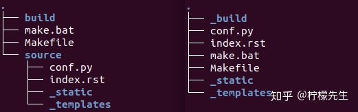

Sphinx笔记¶
参考文档¶
Sphinx安装¶
配置文档资源¶
新建目录并切换，利用sphinx-quickstart创建并配置工程:
mkdir D:\BaiduSyncdisk\Programming\sphinx\my_notebook cd D:\BaiduSyncdisk\Programming\sphinx\my_notebook sphinx-quickstart
是否要创建独立的源文件和构建目录? 选y
输入项目名称、作者等信息
设置项目的语言，中文为zh_CN
创建完成，目录结构为：
Makefile：可以看作是一个包含指令的文件，在使用 make 命令时，可以使用这些指令来构建文档输出。
build：生成的文件的输出目录。
make.bat：Windows 用命令行。
_static：静态文件目录，比如图片等。
_templates：模板目录。
conf.py：存放 Sphinx 的配置，包括在 sphinx-quickstart 时选中的那些值，可以自行定义其他的值。
index.rst：文档项目起始文件。
构建文档¶
- make html
自动构建并预览文档
添加chrome浏览器路径到系统变量 * 计算机 –> 系统 –> 高级系统设置 –> 高级 –> 环境变量 –> 系统变量 * C:\Users\jillking\AppData\Local\Google\Chrome\Application
打开 make.bat 文件, 在末尾 :end 后追加代码(Ctrl + End快捷键可以跳到文件末尾), 即:
:end popd if "%1" == "html" ( chrome D:/BaiduSyncdisk/Programming/sphinx/my_notebook/build/html/index.html )
使用主题¶
- 使用readthedocs主题
pip install sphinx_rth_theme
- 修改conf.py文件
import sphinx_rtd_theme
html_theme = ‘sphinx_rtd_theme’
heml_theme_path = [sphinx_rtd_theme.get_html_theme_path()]